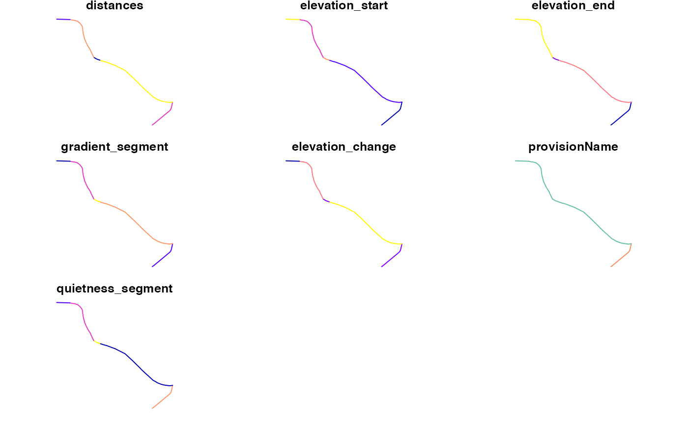

Convert output from CycleStreets.net into sf object
json2sf_cs( obj, cols = NULL, cols_extra = c("elevation_start", "elevation_end", "gradient_segment", "elevation_change", "provisionName"), smooth_gradient = FALSE, distance_cutoff = 50, gradient_cutoff = 0.1, n = 3 )
| obj | Object from CycleStreets.net read-in with |
|---|---|
| cols | Columns to be included in the result, a character vector or |
| cols_extra | Additional columns to be added providing summaries of gradient and other variables |
| smooth_gradient | Identify and fix anomalous gradients? TRUE by default. See https://github.com/Robinlovelace/cyclestreets/issues/14 |
| distance_cutoff | Distance (m) used to identify anomalous gradients |
| gradient_cutoff | Gradient (%, e.g. 0.1 being 10%) used to identify anomalous gradients |
| n | The number of segments to use to smooth anomalous gradents. The default is 3, meaning segments directly before, after and including the offending segment. |
from = "Leeds Rail Station" to = "University of Leeds" # from_point = tmaptools::geocode_OSM(from) # to_point = tmaptools::geocode_OSM(to) from_point = c(-1.54408, 53.79360) to_point = c(-1.54802, 53.79618) # save result from the API call to journey.json # res_json = journey(from_point, to_point, silent = FALSE, save_raw = TRUE) # jsonlite::write_json(res_json, "inst/extdata/journey.json") f = system.file(package = "cyclestreets", "extdata/journey.json") obj = jsonlite::read_json(f, simplifyVector = TRUE) rsf = json2sf_cs(obj, cols = c("distances")) names(rsf)#> [1] "distances" "elevation_start" "elevation_end" "gradient_segment" #> [5] "elevation_change" "provisionName" "geometry"rsf#> Simple feature collection with 5 features and 6 fields #> Geometry type: LINESTRING #> Dimension: XY #> Bounding box: xmin: -1.54802 ymin: 53.7936 xmax: -1.54324 ymax: 53.79618 #> Geodetic CRS: WGS 84 #> distances elevation_start elevation_end gradient_segment elevation_change #> 1 87 27 28 0.01149425 1 #> 2 234 28 33 0.02564103 6 #> 3 18 33 32 0.05555556 1 #> 4 131 32 34 0.01526718 2 #> 5 36 34 34 0.00000000 0 #> provisionName geometry #> 1 Unclassified road LINESTRING (-1.54408 53.793... #> 2 Main road LINESTRING (-1.54324 53.794... #> 3 Main road LINESTRING (-1.54624 53.795... #> 4 Main road LINESTRING (-1.54649 53.795... #> 5 Main road LINESTRING (-1.54747 53.796...#> [1] "time" "busynance" "signalledJunctions" #> [4] "signalledCrossings" "name" "walk" #> [7] "elevations" "distances" "elevation_mean" #> [10] "elevation_start" "elevation_end" "elevation_max" #> [13] "elevation_min" "gradient_mean" "gradient_median" #> [16] "gradient_p75" "gradient_max" "gradient_segment" #> [19] "elevation_change" "provisionName" "start" #> [22] "finish" "startSpeed" "start_longitude" #> [25] "start_latitude" "finish_longitude" "finish_latitude" #> [28] "crow_fly_distance" "event" "whence" #> [31] "speed" "itinerary" "clientRouteId" #> [34] "plan" "note" "length" #> [37] "quietness" "west" "south" #> [40] "east" "north" "leaving" #> [43] "arriving" "grammesCO2saved" "calories" #> [46] "edition" "flow" "geometry"#> Simple feature collection with 5 features and 8 fields #> Geometry type: LINESTRING #> Dimension: XY #> Bounding box: xmin: -1.54802 ymin: 53.7936 xmax: -1.54324 ymax: 53.79618 #> Geodetic CRS: WGS 84 #> time busynance elevations elevation_start elevation_end gradient_segment #> 1 24 351 NA 27 28 0.01149425 #> 2 105 1300 NA 28 33 0.02564103 #> 3 5 34 NA 33 32 0.05555556 #> 4 48 562 NA 32 34 0.01526718 #> 5 9 180 NA 34 34 0.00000000 #> elevation_change provisionName geometry #> 1 1 Unclassified road LINESTRING (-1.54408 53.793... #> 2 6 Main road LINESTRING (-1.54324 53.794... #> 3 1 Main road LINESTRING (-1.54624 53.795... #> 4 2 Main road LINESTRING (-1.54649 53.795... #> 5 0 Main road LINESTRING (-1.54747 53.796...json2sf_cs(obj, cols = c("distances"), smooth_gradient = TRUE, gradient_cutoff = 0.05, distance_cutoff = 50)#>#> Simple feature collection with 5 features and 7 fields #> Geometry type: LINESTRING #> Dimension: XY #> Bounding box: xmin: -1.54802 ymin: 53.7936 xmax: -1.54324 ymax: 53.79618 #> Geodetic CRS: WGS 84 #> distances elevation_start elevation_end gradient_segment elevation_change #> 1 87 27 28 0.01149425 1 #> 2 234 28 33 0.02564103 6 #> 3 18 33 32 0.05555556 1 #> 4 131 32 34 0.01526718 2 #> 5 36 34 34 0.00000000 0 #> provisionName geometry gradient_smooth #> 1 Unclassified road LINESTRING (-1.54408 53.793... 0.01149425 #> 2 Main road LINESTRING (-1.54324 53.794... 0.02564103 #> 3 Main road LINESTRING (-1.54624 53.795... 0.02349869 #> 4 Main road LINESTRING (-1.54649 53.795... 0.01526718 #> 5 Main road LINESTRING (-1.54747 53.796... 0.00000000